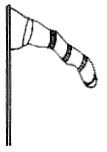
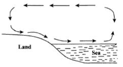
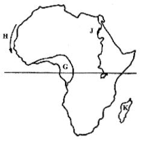
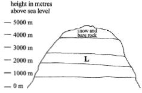
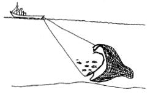

Study the map of Changa area and answer questions 1 to 7.
1. What is the approximate area of Changa town?
2. River Tope flows from
3. The main economic activity carried out in Changa area is?
4. A mother in Soko market got a baby at home. The birth of the baby should be registered at?
5. The climate of Changa area can be described as
6. The main settlement pattern in Changa area is
7. The most commonly used means of transport in Changa area is?
8. Which one of the following statements describes the political organisation of the San during the pre-colonial period?
9. Which one of the following groups of communities found in Eastern Africa is made up of River Lake Nilotes?
10. Which one of the following was a function of the clan in the traditional African society?
11. Which season is experienced in northern hemisphere in the month of June?
12.

13. Below are statements that describe results of early visitors to Eastern Africa.
(i) Introduction of stone buildings.
(ii) Introduction of Western education.
(iii) Development of Swahili culture.
(iv) Abolition of slave trade.
(v) Introduction of use of currency.
14. Below are statements about an African traditional leader.
(i) He was the commander in chief of the army.
(ii) He was the chief judge.
(iii) He controlled trade.
(iv) He presided over religious ceremonies. The African leader described above is
15. Which one of the following groups of lakes was formed through volcanic activity?
16.

17. Which system of colonial administration was used by Belgium in Congo?
18. During the German colonial rule in Tanganyika, the title of Africa headman was
19. Three of the following mountains were formed in the same way except
20. The struggle for independence in both Ghana and Zimbabwe had one common factor. The Nationalists in both countries

21. Which one of the following statements is not true about the vegetation in the area marked G?
22. The current marked H is
23. The multipurpose river project marked J is
24. The island marked K was colonised by
25. Below are statements which describe ways through which communities interact.
(i) They go to war.
(ii) They go to school together.
(iii) They intermarry.
(iv) They exchange goods.
(v) They compete in games.
26. Which one of the following statements is true about European Settlers farming in Kenya?
27. The following are characteristics of a certain type of soil.
(i) It has fine particles
(ii) It cracks when dry.
(iii) It easily gets water logged.
28. Use the diagram below to answer question 28.

29. The following are factors which affect population distribution in Eastern Africa.
(i) Low temperatures.
(ii) Employment opportunities.
(iii) High rainfall.
(iv) Transport network
(v) Fertile soils.
30. Which mineral is correctly matched with the country where it is mined?
31. The main problem facing forests in Kenya is?
32. Below are some conditions that favour the growth of cash crops in Africa.
(i) Moderate rainfall.
(ii) Dry period during harvesting.
(iii) High temperatures.
(iv) Deep well drained volcanic soils.
(v) High humidity.
33. Below are statements about a mineral in Kenya.
(i) It is used to manufacture toothpaste
(ii) It is used in hardening steel.
(iii) It is used in the manufacture of cement.
34. Below is a diagram showing a method of fishing.

35. The main reason for location of a cement factory at Bamburi is
36. Which one of the following items is a product of traditional industries?
37. Which one of the following is a problem facing beef farming in both Kenya and Tanzania?
38. Mwea Tebere and Perkerra Irrigation Schemes have one factor in common. It is that they
39. Which one of the following statements is true about population in Kenya and Germany?
40. The main reason why people in Kenya migrate from urban areas to rural areas is
41. Which one of the following United Nations agency was set up to promote peace and international understanding?
42. Below are statements that describe achievements of organisations in Africa.
(i) It has helped to resolve boundary conflicts in Africa.
(ii) It has encouraged countries to reduce tariffs.
(iii) It has protected the freedom of African nations.
(iv) It has helped countries to gain independence.
(v) It has led to establishment of a regional bank.
43. Many people in African communities prefer working together when carrying out certain tasks. The reason for this is to
44. Which one of the following countries in Africa is correctly matched with its tourist destination?
45. Which one of the following is the best way of transporting petroleum products?
46. Naomi visited her father who lives in an estate near a slum area. While on the way, she found it difficult to walk through the slum. Which one of the following problems of urban centres did she face?
47. Which one of the following group of products consists of exports from Kenya?
48. Under succession law, if a man dies and has two daughters and one son, who should inherit his property?
49. A person vying for a parliamentary seat is required by law to present nomination papers to the
50. A person who is invited by parties that are in conflict to help them solve their dispute is called
51. Which one of the following practices is an abuse of human rights?
52. Below are values that are practiced in Society.
(i) Justice
(ii) Equity.
(iii) Rule of law.
53. The main factor that is likely to undermine peace in Kenya is
54. The main cause of disagreements in school is
55. Three of the following are responsibilities of spouses in marriage. Which one is NOT?
56. The highest court in Kenya is
57. Three of the following are functions of the legislature in Kenya. Which one is NOT?
58. Mary a standard eight pupil was watching news on television. She noticed that there was also another person using hand signs. The reason for the use of signs was
59. Three of the following statements describe ways of demonstrating patriotism. Which one is NOT?
60. Which one of the following groups consists of factors that promote national unity in Kenya?
SECTION B
CHRISTIAN RELIGIOUS EDUCATION
61. Which one of the following is a reason why Adam and Eve ate the fruit from the tree in the middle of the garden? They hoped to
62. Abraham demonstrated his faith in God when he
63. The main reason why Jacob worked for Laban was because he wanted to
64. “Take off your sandals for you are standing on holy ground” (Exodus 3:5). These words were spoken by God to
65. Which one of the following events took place on the night of the Exodus?
66. King Ahab of Israel sinned against God when he
67. When Solomon became king of Israel he asked for wisdom from God in order to
68. A miracle that was performed by prophet Elijah when he was in Zarephath was the
69. The reason why the lions did not harm prophet Daniel when he was thrown in the pit is because
70. Which one of the following events took place when Jesus was born?
71. Who among the following people was in the temple when Jesus was being dedicated?
72. “Man cannot live on bread alone” (Luke 4:4) A lesson Christians learn from this response given by Jesus during his temptation is that they should
73. The main reason why Jesus chose the twelve disciples was in order to
74. The main lesson Christians learn from the parable of the good Samaritan is that they should
75. Which one of the following miracles of Jesus teaches Christians to care for the environment? The miracle of the
76. Who among the following people asked for permission to bury the body of Jesus?
77. Jesus made himself known as the resurrected Lord to the two men at Emmaus when he
78. Which one of the following events took place on the day of Pentecost?
79. Ananias and Sapphira sinned against God when they
80. “Tabitha spent all her time being good and helping the poor” (Acts 9:36). What virtue did she demonstrate?
81. Which one of the following statements about Jesus is expressed in the Apostle’s creed?
82. Which one of the following acts of worship is practised in both Christianity and traditional African religion?
83. In traditional African communities hair of a new born baby is shaved to
84. In traditional African communities settling of disputes among the people is a duty performed mainly by?
85. The main reason why Christians pay taxes to the government is to
86. You discover that your classmate Dennis has been stealing pencils from other pupils. As a Christian, what is the best action for you to take?
87. Sylvia has been hiding in the toilet to avoid doing morning duties at school. As a Christian, what advice would you give her?
88. Which one of the following is the best leisure activity for a standard eight pupil to engage in during a school holiday?
89. Jane’s classmates have been sneaking out of school during classtime to go and play. They ask her to join them. As a Christian what should Jane do?
90. Your desk mate Brian is involved in homosexuality. As a Christian, you should
ISLAMIC RELIGIOUS EDUCATION
61. Which one of the following verses is found in surah Al-Falaql
62. Which one of the following surahs assured the Prophet (p.b.u.h) of continued support from Allah (s.w.t)?
63. The following are verses from surah Al-Iklas.
(i) “He neither begets nor was He begotten.”
(ii) “Say He is Allah the One.”
(iii) “And there is none comparable to Him.”
(iv) “Allah the self sufficient master.”
64. One way that Muslims can apply the teachings of surah Al-Qadar is by
65. A lesson that Muslims learn from surah Al-Fiil is that
66. The Prophet (p.b.u.h) said “What will mostly take people to paradise will be the fear of Allah” and
67. The main reason why taking and giving of bribes is prohibited in Islam is because it
68. Which one of the following Swalat is correctly matched with its timing?
69. Standard four pupils in Bidii Primary School were asked to perform wudhu. Which among the following pupils washed the fardh parts only?
70. The total number of rakaats that a Muslim must perform in a day is
71. Which one of the following groups of people contain the correct recipients of Zakaf!
72. An act that can nullify saum is
73. The main reason why Muslims are encouraged to seek lawful means of earning a living is because it
74. The correct phrase to use when congratulating a person is
75. The recommended act when visiting the sick is to
76. For a person to become a Muslim he should
77. Prophet Ibrahim’s protection against the fire teaches that
78. Which among the following is an act of Ihsan?
79. Which among the following pairs of angels question the dead in the grave?
80. According to the Hadith of the Prophet (p.b.u.h) the advice you would give to a classmate who is fond of using abusive language is to tell him to
81. A business practice that should be avoided by Muslims is
82. Which one of the following qualities should Rehema consider while choosing friends in her class?
83. Who among the following was the first Muslim convert?
84. The main lesson that Muslims learn from the battle of Uhud is that they should
85. Which one of the following boxes contains the correct order of events that happened in the history of Islam?
86. The persecution of Muslims in Makka led to the
87. The difference between Idd and Jum’a prayer is that
88. Which among the following months of the Islamic calender are Ash-Hurul-Hurum?
89. A common characteristic of all mosques is that they face
90. Nabi Ibrahim took his wife and son to the desert because
HINDU RELIGIOUS EDUCATION
61. Which one of the following is the role of Lord Vishnu?
62. Paramatma can hear the prayers of a million people at a time because He is
63. Which form of the Paramatma is worshipped in Hindu temples?
64. Lord Vishnu asked King Satyavrat to put seven Rishis on board a boat, during Matsya Avatar in order to
65. What did Parshvanath decide to do after seeing the images of the marriage procession of Tirthankar Neminath?
66. Which one of the following statements is not true about Swami Dayanand Saraswati?
67. The following statements describe the journey of Lord Rama, Sita and Lakshman, on their way to Vanvas from Ayodhya:
(i) Kevat helped them to go across in his boat
(ii) They made their huts near Mt. Chitrakoot
(iii) Sumant accompanied them up to the river Ganga
(iv) Bharadwaj Muni welcomed them to his Ashram
68. According to Jain scripture of Kalpasutra, who rejoiced by playing sweet music and showering flowers from heaven on the birth of Mahavir?
69. The scripture that is read for seven days in commemoration of a departed soul is
70. Every year, Surjeet Kaur’s parents visit an orphanage on her birthday, to distribute clothes and food to the needy people. By doing so, they practising the principle of
71. Hindus believe that after death, the soul takes birth in another body. This is the principle of
72. Three of the following are reasons why Jains practice Aparigraha. Which one is NOT?
73. Which one of the following is of most importance for a Brahmachari to practice in an Ashram?
74. Who among the following personalities preached to the Sikhs to give 10% of their earnings towards Wand Shaknal
75. Three of the following can be achieved through practice of the principle oiAkrodh except?
76. Which one of the following Sikh Sanskars is performed first?
77. In which part of a Hindu temple are the images of deities kept?t
78. One of the five Ks that a Sikh Khalsa wears to show Param atm a’s Hukam is
79. The following statements describe a Jain Tirthakshetra\
(i) Lord Mahavir gave his last sermon here
(ii) Nandi Vardhan built a derasar in a pond
(iii) It houses the holy footprints of Mahavir
(iv) People participate in a grand fair during Dtwali
80. Hindus celebrate the utsav of Dashera in order to
81. Which one of the following Gurus added the importance to Baisakhi Day by forming the sa?
82. Which one of the following combinations of Samagri is offered by devotees on Mahashivratril
83. Which one of the following steps of Ashtang Yoga is the correct order for achieving Samadhil
84. Bhakta Prahalad used to meditate on the mantra of
85. Which one of the following Jain mantra is recited before the Siddhachakral
86. During which Ritu do we appreciate the nature’s beauty and abundance?
87. Which one of the following Avatar of Lord Vishnu is correctly matched with Yuga?
88. Manjinder Kaur wears Salwar Kameez and a Dupatta to cover her head when visiting a Gurudwara. By doing so, she is practising
89. Which one of the following virtues do we learn from the story of Sudama and Lord Krishna?
90. Which one of the actions is the worst for our environment?